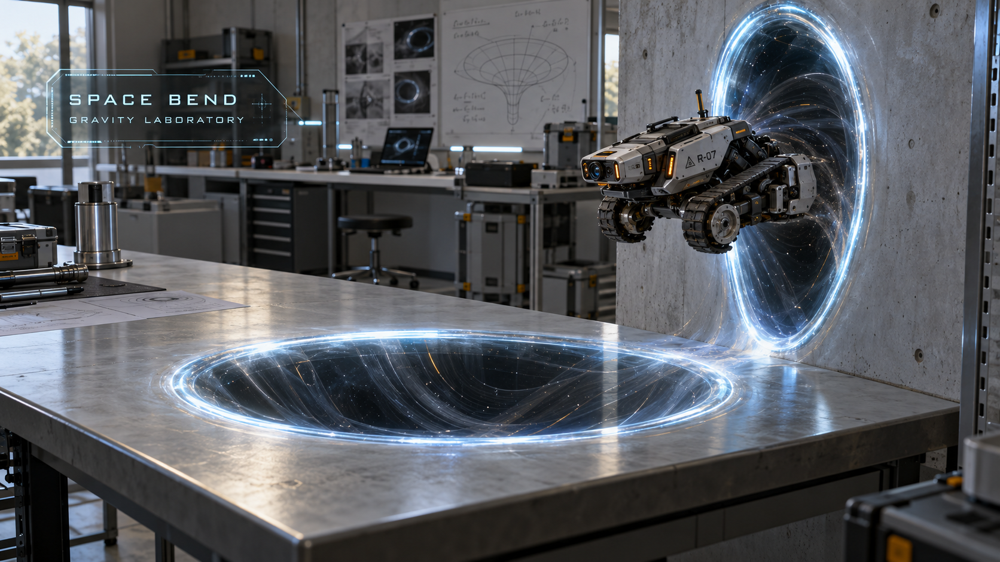
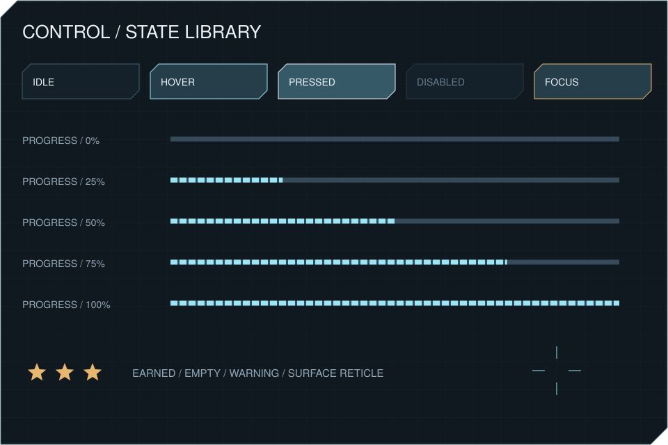
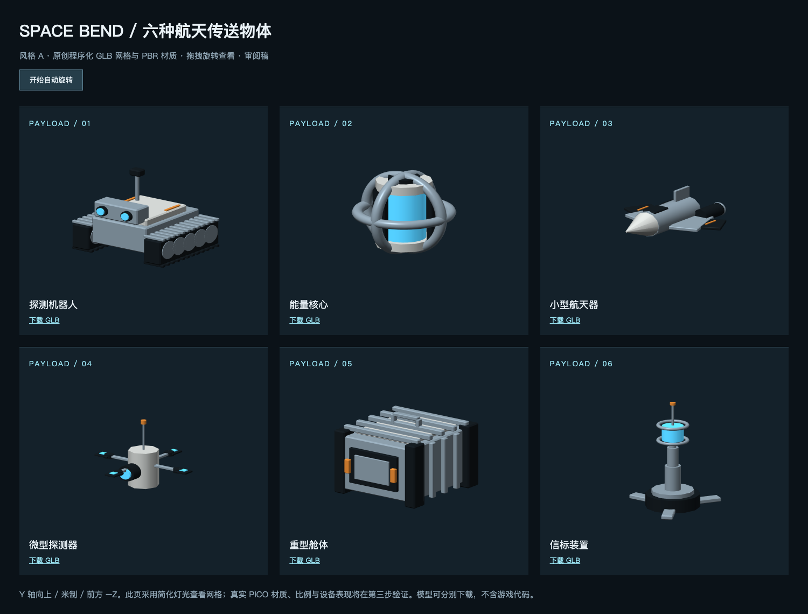

视觉参考图，由 imagegen 生成；不是设备运行截图，也不是可用三维模型。
01 / 自定义空间 UI
切角轮廓、仪表刻度与六种物体示意图标。全部面板均提供三语 SVG 源文件；界面中的记录、星级和物体参数为审阅示例。
02 / 交互元素

附 10 种独立交互图标和两种星级 SVG。物体示意图标用于 UI，不代替三维模型。
03 / 虫洞动态方向
8 秒视觉方向循环：闭合、引力吸入、收缩消失。另附真实 GLB 动画源文件：Portal_Close / Portal_Suction / Portal_Collapse。此处为矢量动态素材预览，运行时使用真实平面锚定的动态轮廓与空间音频；这里展示素材参考。
下载虫洞 GLB 动画参考资产04 / 音频试听
深邃科技环境音 · 32 秒立体声循环
绘制笔触
失败提示
物体飞行
平面碰撞
虫洞闭合
虫洞收缩
成功提示
虫洞吸入（单声道声源）
原创合成音频。吸入声已提供单声道循环源文件；已接入 PICO Spatial Audio 距离衰减；真实头显听感仍待实测。
05 / 三语播报
中文、英文各 12 条，共 24 个语音文件；简体与繁体中文共用简体语音，显示文案分别保留，覆盖扫描、绘制、选择、放置、闭环、失败、移动、删除与跟踪丢失。当前为本机合成播报。
简体中文
欢迎进入引力实验室。请先扫描周围空间。
缓慢环顾四周，识别地面、桌面和墙面。
扫描完成。请在已识别的平面上绘制虫洞。
按住扳机或抓捏，绘制一个闭合轮廓。
虫洞已闭合，引力场稳定。
按下摇杆，选择传送物体。
按下扳机，将物体放置到首个虫洞入口。
闭环已建立。物体正在稳定循环。
检测到碰撞。实验已中止，请手动重置关卡。
按住握持键，可在当前平面内移动虫洞。
对准虫洞，长按 B 或 Y 键两秒删除。
平面跟踪丢失。请重新扫描空间。
繁體中文
歡迎進入引力實驗室。請先掃描周圍空間。
緩慢環顧四周，辨識地面、桌面和牆面。
掃描完成。請在已辨識的平面上繪製蟲洞。
按住扳機或捏合，繪製一個閉合輪廓。
蟲洞已閉合，引力場穩定。
按下搖桿，選擇傳送物體。
按下扳機，將物體放置到第一個蟲洞入口。
閉環已建立。物體正在穩定循環。
偵測到碰撞。實驗已中止，請手動重設關卡。
按住握持鍵，可在目前平面內移動蟲洞。
對準蟲洞，長按 B 或 Y 鍵兩秒刪除。
平面追蹤遺失。請重新掃描空間。
English
Welcome to the Gravity Laboratory. Scan your surroundings to begin.
Look around slowly to identify the floor, tables, and walls.
Scan complete. Draw a portal on a detected surface.
Hold the trigger or pinch, and trace a closed outline.
Portal closed. Gravitational field stable.
Click the thumbstick to choose a payload.
Press the trigger to place the payload at the first portal.
Loop established. The payload is circulating steadily.
Collision detected. Experiment stopped. Reset the mission when ready.
Hold the grip button to move the portal within its current surface.
Point at a portal and hold B or Y for two seconds to delete it.
Surface tracking lost. Scan your surroundings again.
06 / 三维模型制作状态
打开可旋转三维预览 / 下载模型
六种物体已提供真实 GLB 网格与 PBR 材质。当前为程序化硬表面初稿，写实细节尚需审阅。
此页保留素材与示例文案预览，实际运行 APK、截图与验证说明位于项目 output 和 docs/delivery 目录。